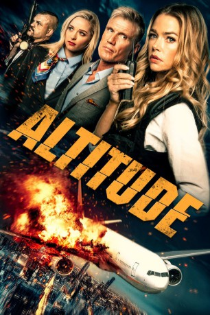

gesehen am 12.05.2019
gesehen am 12.05.2019Alternativ: Altitude (Englischer Titel) gesehen am 12.05.2019
 
 IMDB-Wertung: 4.0 / 10
IMDB-Wertung: 4.0 / 10  Metascore:
Metascore: 
Eigentlich erwartet Gretchen Blair einen ganz normalen Flug nach Washington, D.C.. Doch ihr Sitznachbar unterbreitet der FBI-Agentin ein sehr ungewöhnliches Angebot: Er verspricht ihr 75 Millionen Dollar Belohnung, sollte sie ihn sicher auf den Erdboden zurückbringen. Der Grund für seine Offerte: Er glaubt, dass das Flugzeug bald von Verbrechern gekapert wird. Wenig später bewahrheitet sich diese Voraussage und Gretchen sieht sich mit einer professionellen Diebesbande konfrontiert, die die Kontrolle über das Flugzeug an sich reißt. Während die Kriminellen alles auf den Kopf stellen, um ihr vermisstes Diebesgut ausfindig zu machen, setzt Gretchen alles daran, nicht nur das Leben ihres Sitznachbars, sondern das aller Passagiere zu schützen. Über den Wolken entbrennt ein tödlicher Kampf…
Jahr: 2017
Dauer: 87 Minuten
FSK: 16
Land: USA Studio: LionsgateTonspuren:
Untertitel:
Auflösung: 720p (1280x720) Größe: 2334 MB
Genre: Action, Thriller, Krimi
Regisseur: Alex Merkin
Drehbuch: Tyler W. Konney, Jesse Mittelstadt, Jesse Mittelstadt, Richard Switzer
Soundtrack: Bobby Tahouri
Darsteller:
Datei: X:\2017(A-F)\Altitude - Die Hard in the Sky (2017, FSK16, 1280x720).mkv seit 18.04.2019
Festplatte: HD 2017(A-Z)-2018(A-F)
 Es gibt insgesamt 152 Filme in der Gruppe '2017(A-F)'
Es gibt insgesamt 152 Filme in der Gruppe '2017(A-F)'